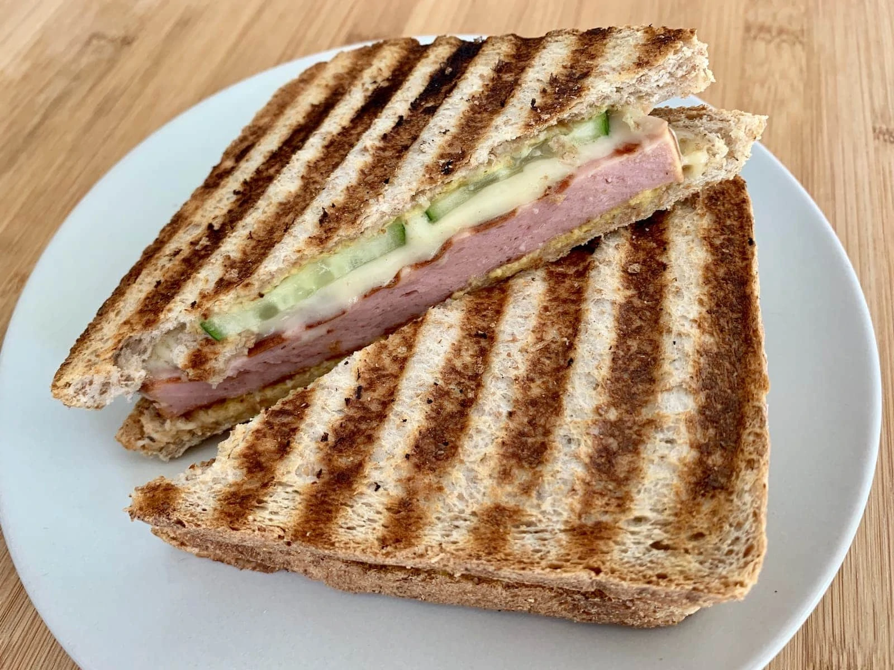
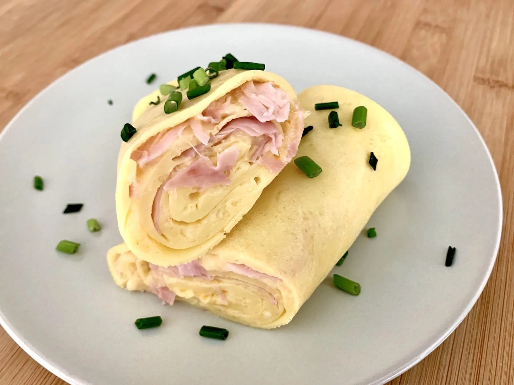

Fleischkäse-Käse-Sandwich

Fleischkäse & Käse?
Ich kann dir versichern: Schmeckt geil! Und weil man mit dem OptiGrill super einfach Fleischkäse und Sandwiches grillen kann,
zeige ich dir in diesem Rezept, wie man sich in wenigen Minuten ein leckeres Fleischkäse-Käse-Sandwich im Tefal Kontaktgrill zubereitet.
Zutaten
| Menge |
Zutat |
| 2 |
Scheiben Fleischkäse |
| 4 |
Scheiben Toastbrot |
| 2 |
Scheiben Käse |
| 2 |
TL Senf |
| |
Salatgurke |
Zubereitung
1. OptiGrill einschalten, das Würstchen-Programm auswählen und den Kontaktgrill vorheizen.
2. Sobald der OptiGrill aufgeheizt ist, die Fleischkäse-Scheiben auf die Grillplatten legen und mit Schließen des Deckels den Grillvorgang starten.
3. Den Fleischkäse grillen, bis das Lämpchen orange oder rot leuchtet – je nachdem, wie kross du den Leberkäse magst.
4. Währenddessen die Salatgurke waschen und in Scheiben schneiden.
5. Die unteren Toast-Scheiben mit jeweils einem Teelöffel Senf bestreichen.
6. Jeweils eine Scheibe des gegrillten Fleischkäse darauf legen. Jeweils mit einer Scheibe Käse und Salatgurke garnieren, Toastscheibe drauf legen.
7. Den OptiGrill im Sandwich-Modus erneut aufheizen.
8. Sandwiches auf den aufgeheizten OptiGrill legen und den Deckel schließen, um den Grillvorgang zu starten.
9. Je nach gewünschter Bräune die Fleischkäse-Käse-Sandwiches bis Gelb oder Orange grillen.
10. Zum Servieren die Sandwiches diagonal durchschneiden.
Pfannkuchen-Rolle mit Schinken & Käse

Dieses Rezept für eine Pfannkuchen-Rolle ist wie gemacht für die Backschale des OptiGrills:
Der dünne Pfannkuchen-Teig wird von unten gleichmäßig gebacken, der Käse von oben geschmolzen und dann alles ganz einfach aufgerollt.
Ein tolles und schnell zubereitetes Gericht, das man durch einen anderen Belag auch sehr einfach variieren kann.
Zutaten
| Menge |
Zutat |
| 160g |
Mehl |
| 320ml |
Milch |
| 4 |
Eier |
| 100g |
Schinken |
| 80g |
Geriebener Käse |
| |
Butter, Schnittlauch, Salz, Pfeffer
|
160g Mehl
320 ml Milch
4 Eier
100g Schinken
80g Geriebener Käse
Butter, Schnittlauch, Salz, Pfeffer
Zubereitung
1. Backschale in den OptiGrill einsetzen und im Manuellen Modus auf Gelb (180 °C) vorheizen.
2. Mehl in eine Rührschüssel sieben und mit Milch und Eiern gut verrühren. Den Teig mit etwa einer Prise Salz und Pfeffer würzen.
3. Sobald der OptiGrill vorgeheizt ist, etwas Butter in die Backschale geben und verteilen. Etwa eine Schöpfkelle Pfannkuchen-Teig in die Backschale geben, sodass er sich dünn auf der ganzen Fläche verteilt. Dabei kannst du auch die Backschale etwas anheben und vorsichtig schwenken, dann verteilt sich der Teig ganz einfach.
4. Auf den noch flüssigen Teig ein paar Scheiben Schinken und etwa eine Hand voll geriebenen Käse verteilen.
5. Deckel schließen und den Pfannkuchen für etwa drei Minuten backen. Dann mit einem Pfannenwender den Pfannkuchen von einer Seite vorsichtig aufrollen und nochmals für zwei Minuten backen.
6. Die fertig gebackene Pfannkuchen-Rolle aus der Backschale nehmen. Den Vorgang noch drei Mal wiederholen, bis alle Zutaten aufgebraucht sind. Butter brauchst du bei den weiteren Durchgängen nicht mehr oder nur noch ganz wenig.
7. Die Pfannkuchen-Rollen zum Servieren in der Mitte durchschneiden und mit Schnittlauch garnieren.